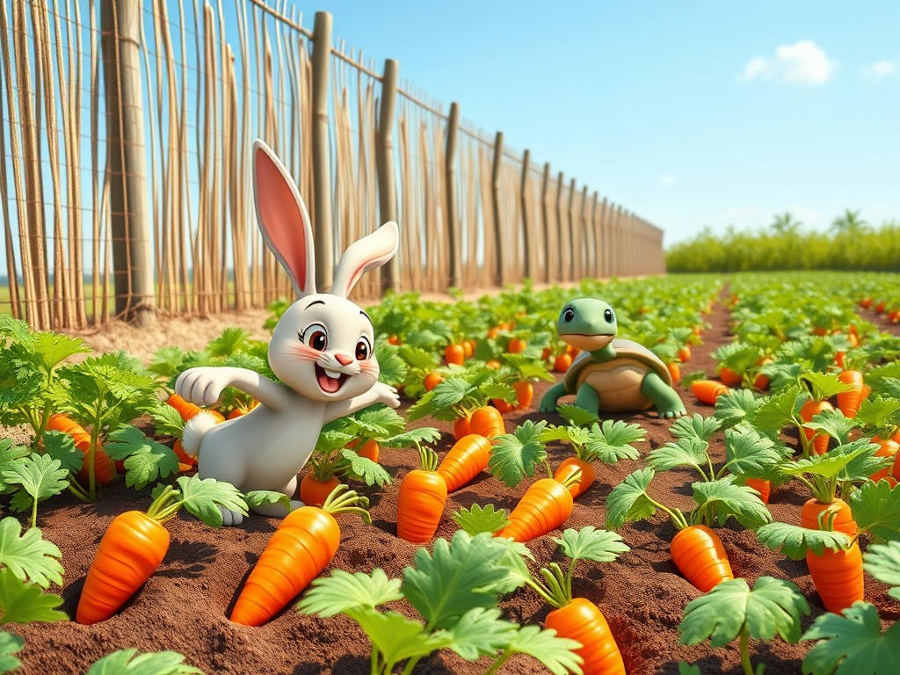

ماهي المشكلة ؟
المشكلة هي حالة أو موقف يواجهه الشخص ويجعله يشعر بالتحدي أو الحيرة. يمكن أن تكون مشكلة داخلية، مثل شعور الشخص بالحزن أو الخوف، أو مشكلة خارجية، مثل مواجهة صعوبة في تحقيق هدف ما. الشخص أو الشخصيات في القصة يسعون لحل هذه المشكلة، مما يجعل الأحداث تتطور وتنتقل من مرحلة إلى أخرى.
استخرج المشكلة من القصة التالية:
مغامرة مريم والكتاب السحري

ذات يوم، كانت مريم تسير في طريقها إلى المدرسة عندما لاحظت مكتبة قديمة لم ترها من قبل.
دفعها الفضول للدخول. كانت المكتبة مليئة بالكتب القديمة والمخطوطات، لكن شيئًا غريبًا جذب انتباهها.
كان هناك كتاب كبير مفتوح على طاولة في المنتصف، وتوهجت صفحاته بلون ذهبي خافت.
اقتربت مريم من الكتاب بحذر، وعندما لمسته، انفتح باب سحري أمامها.
وجدت نفسها فجأة في عالم مليء بالقصص والشخصيات الخيالية.
لكن سرعان ما أدركت أن هناك مشكلة كبيرة: الكلمات بدأت تختفي من الكتب، وإذا لم تُحل المشكلة، ستختفي كل القصص إلى الأبد!
قم بسحب الإجابة الصحيحة وأفلتها داخل المربع:
ما المشكلة التي تواجه مريم في القصة؟
استخرج المشكلة من القصة التالية:
قصة رحلة الحديقة

كان هناك أرنب صغير يدعى "فرحان" يحب الجزر كثيرًا.
في يوم من الأيام، وجد حقلاً مليئًا بالجزر، ولكن كان هناك سياج عالٍ يمنعه من الدخول.
فكر فرحان وسأل صديقته السلحفاة "لولا" للمساعدة.
تعاونوا معًا ووجدوا مكانًا منخفضًا في السياج.
دخلوا الحقل وأكلوا الجزر حتى شبعوا.